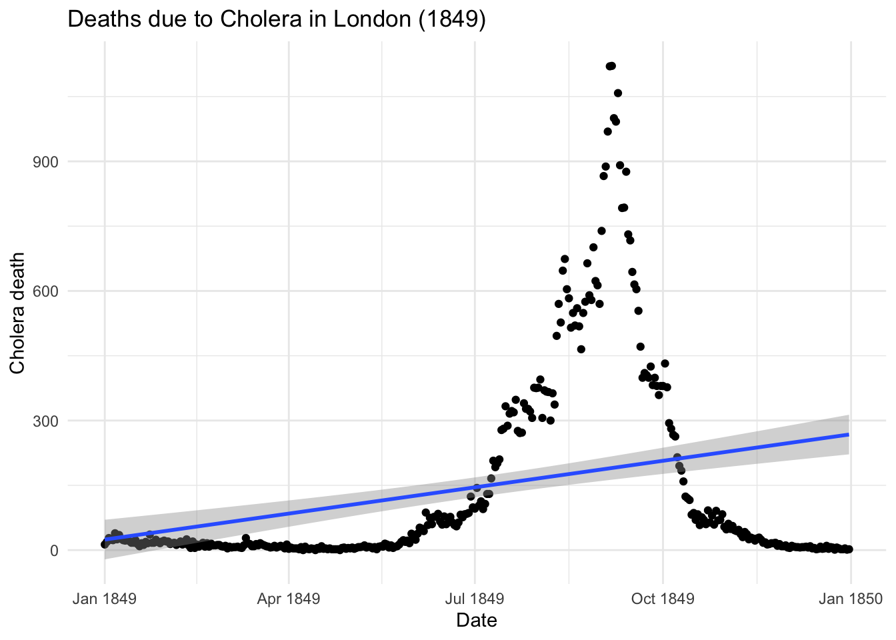
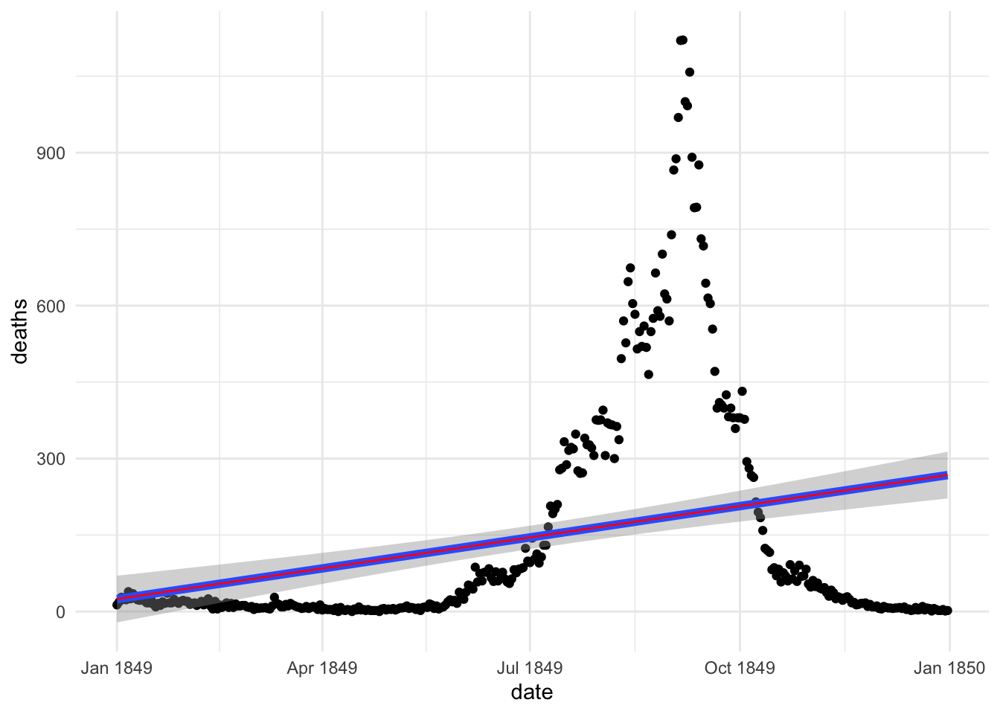

# A tibble: 6 × 2
date deaths
<date> <dbl>
1 1849-01-01 13
2 1849-01-02 19
3 1849-01-03 28
4 1849-01-04 24
5 1849-01-05 23
6 1849-01-06 39How does geom_smooth() make predictions
rstats
modeling
linear regression
geom_smooth
Overview
Linear regression is a statistical technique used to represent the linear relationship between a response \((y)\) and a predictor \((x)\).
\[ y= \beta_0 + \beta_1x \]

Below we examine some mismatch in output when plotting the prediction results of a linear model made with the lm() and the predict() functions versus the output produced by the geom_smooth() layer in a ggplot() visualization.
The first dataset used is from the HistData package HistData::CholeraDeaths1849. We select just the deaths due to Cholera within 12 months in 1849, and visualize the trend in time of the number of deaths with the addition of a further layer made with the geom_smooth().
?geom_smooth()
?HistData::CholeraDeaths1849summary(cholera) date deaths
Min. :1849-01-01 Min. : 0
1st Qu.:1849-04-02 1st Qu.: 8
Median :1849-07-02 Median : 23
Mean :1849-07-02 Mean : 146
3rd Qu.:1849-10-01 3rd Qu.: 192
Max. :1849-12-31 Max. :1121 ggplot(cholera,aes(x=date,y=deaths))+
geom_point()+
geom_smooth(method = "lm")+
labs(title="Deaths due to Cholera in London (1849)",
x="Date",y="Cholera death")+
theme_minimal()`geom_smooth()` using formula = 'y ~ x'
The purpose of making a model is that to identify the inside pattern of a series of observations. This means that the model would need to be able to interpolate given observations in order to represent the overall pattern. As in the visualization above the geom_smooth() with the specification of the method="lm" helps us visualize what the direction of a linear pattern would be on this data. If it is a growing pattern or not.
Clearly the points are shaping a bell distribution of deaths in time, and this is not the case of a linear relationship between date and cholera deaths, but we would like to dig into the output of the prediction of the application of a linear model on this data and then compare it with the output of the geom_smooth(method="lm") line.
Let’s apply a linear model to this data and make some rough predictions.
Call:
lm(formula = deaths ~ date, data = cholera)
Residuals:
Min 1Q Median 3Q Max
-265.88 -104.28 -59.87 11.19 930.92
Coefficients:
Estimate Std. Error t value Pr(>|t|)
(Intercept) 2.954e+04 4.878e+03 6.056 3.49e-09 ***
date 6.678e-01 1.108e-01 6.026 4.13e-09 ***
---
Signif. codes: 0 '***' 0.001 '**' 0.01 '*' 0.05 '.' 0.1 ' ' 1
Residual standard error: 223.1 on 363 degrees of freedom
Multiple R-squared: 0.09094, Adjusted R-squared: 0.08843
F-statistic: 36.31 on 1 and 363 DF, p-value: 4.132e-09The application of a linear model on this data produced an estimation of the intercept \((\beta_0)\) and the slope \((\beta_1)\).
\[ \beta_0=29540 \text{ and } \beta_1=0.6678 \] The intercept is the starting point of a linear model line on the y axes, while the slope is the inclination of the line, that can be positive or negative, indicating the growing or decreasing tendency of the relationship between the response and the predictor.
Let’s draw this line.
ggplot(cholera, aes(x=date, y=deaths)) +
geom_point() +
geom_abline(slope=0.6678, intercept=29540,
col="pink")+
theme_minimal()
Now calculate the prediction and the Root Mean Squared Error (RMSE) to evaluate how the model worked.
Root Mean Squared Error (RMSE): 222.4774 ggplot(cholera, aes(x=date)) +
geom_point(aes(y=deaths)) +
geom_smooth(aes(y=deaths),method = "lm",linewidth=2)+
geom_line(y=predictions, col="red")+
theme_minimal()`geom_smooth()` using formula = 'y ~ x'
Now let’s use a different dataset. This data set comes from a paper by Brigham et al. (2003) that analyses some tables from Farr’s report of the Registrar-General on mortality due to cholera in England in the years 1848-1849, during which there was a large epidemic throughout the country. In this case we do not have the time variable but the numbers of deaths are considered by 38 districts in London.
?HistData::Cholera id district cholera_deaths popn
1 1 Newington 907 63074
2 2 Rotherhithe 352 17208
3 3 Bermondsey 836 50900
4 4 St George Southwark 734 45500
5 5 St Olave 349 19278
6 6 St Saviour 539 35227The predictor in this case is a character, we are considering the relationship between the deaths rate and the districts, so we are looking at to see whether the deaths rate is different among 38 districts. The order in this case is arbitrary and this influences the pattern. The geom_smooth() is not drowning a line, it doesn’t know how the x-axis has to be ordered, because there is not a specified order to follow.
ggplot(cholera2, aes(x=id,y=cholera_deaths)) +
geom_point()+
geom_smooth(method = "lm")+
theme_minimal()`geom_smooth()` using formula = 'y ~ x'
while if we set an order with as.integer(id), the line can be drawn but it hasn’t got much meaning. The trend is not going up or down because we are considering districts in the x-axis.
ggplot(cholera2, aes(x=as.integer(id),y=cholera_deaths)) +
geom_point()+
geom_smooth(method="lm")+
theme_minimal()`geom_smooth()` using formula = 'y ~ x'
If we consider the population, in the middle of 1849, a numeric vector, these values are by districts, each popn value corresponds to the level of population in one of the 38 districts. Let’s see what happens if we plot popn versus cholera_deaths.
ggplot(cholera2, aes(x=popn,y=cholera_deaths)) +
geom_point()+
geom_smooth(method="lm")+
theme_minimal()`geom_smooth()` using formula = 'y ~ x'
Now the values on the x-axis are numeric and have a meaning to be ordered from the lower to the highest but it is not a trend. Each point is one district population value with some deaths due to cholera. The geom_smooth line it is telling us that if the level of the population is higher, the level of deaths due to cholera is higher, than in other location with a lower level of population.
But we can evaluate the growing relationship between population level and numbers of deaths due to cholera.
Let’s make a linear model and predict the future, roughly.
mod2 <- lm(cholera_deaths ~ popn , data = cholera2)
mod2
Call:
lm(formula = cholera_deaths ~ popn, data = cholera2)
Coefficients:
(Intercept) popn
1.073e+02 4.357e-03 Let’s draw this line.
ggplot(cholera2, aes(x=popn, y=cholera_deaths)) +
geom_point() +
geom_abline(slope=0.004357, intercept=107.3,
col="pink")+
theme_minimal()
Root Mean Squared Error (RMSE): 281.7808 plot <- ggplot(cholera2, aes(x=popn)) +
geom_point(aes(y=cholera_deaths)) +
geom_smooth(aes(y=cholera_deaths),method = "lm",linewidth=2)+
geom_line(y=predictions2, col="red")+
labs(title="Cholera Deaths explanined by\nLondon Districts Population (1849)",
x="1849 London Population by 38 Districts",
y="Cholera Deaths",
caption="William Farr's Data on Cholera in London, 1849")+
theme_minimal()
plot`geom_smooth()` using formula = 'y ~ x'
Think about that!

Imagine that we absolutely want to replicate the geom_smooth(method="lm") line, we would need to consider some steps that the function takes in order to plot the prediction line that doesn’t much with ours this time. First think to consider is that we haven’t used new data but just produced the prediction from our dataset. But this is exactly as the same as before.
There is a function ggplot_build() that let’s us dig into the ggplot data manipulation used to make the geom_smooth line.
?ggplot_build()# source: https://stackoverflow.com/questions/42673665/geom-smooth-gives-different-fit-than-nls-alone
dat = ggplot_build(plot)$data[[2]]`geom_smooth()` using formula = 'y ~ x'This time we use the newdata = dat insted of NULL.
Warning in predictions3 - cholera2$cholera_deaths: longer object length is not
a multiple of shorter object lengthcat("Root Mean Squared Error (RMSE):", rmse, "\n")Root Mean Squared Error (RMSE): 411.1835 ggplot(cholera2, aes(x=popn)) +
geom_point(aes(y=cholera_deaths)) +
geom_smooth(aes(y=cholera_deaths),method = "lm",linewidth=2)+
geom_line(data=dat,y=predictions3, col="red")+
theme_minimal()`geom_smooth()` using formula = 'y ~ x'
We eventually matched the geom_smooth line, but why did our predictions on the original data result in that squiggly line?